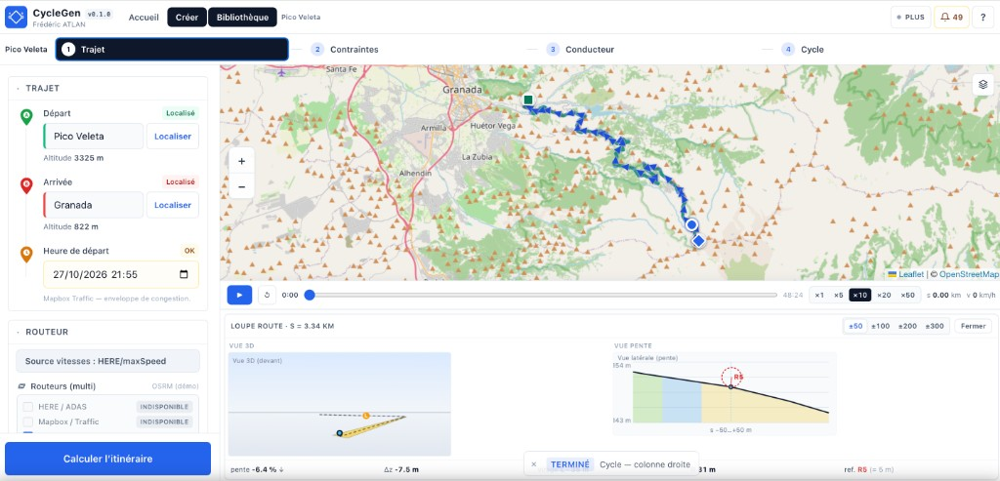

Pourquoi un cycle sur mesure
Un simulateur véhicule se nourrit de profils vitesse, temps et pente. Avec un cycle réglementaire plat, on ne voit jamais la descente de col, alors que c’est là que le frein chauffe et que la régénération d’un véhicule électrique sature. Pour dimensionner ces systèmes, il faut des cycles qui ressemblent à l’usage réel, et savoir quels points de fonctionnement reviennent souvent.
CycleGen part d’un trajet sur une carte. Il lit les limitations de vitesse (OpenStreetMap, OSRM). La courbure de la route borne la vitesse en virage par un confort latéral. Pour les feux, les grands axes ont une onde verte ; ailleurs, l’état rouge ou vert est tiré avec une graine fixe, donc le même trajet donne le même cycle. Avec une clé Mapbox, on ajoute le ralentissement dû au trafic selon l’heure de départ.
Le conducteur a trois profils (Eco, Normal, Sport) qui règlent l’accélération et le freinage qu’il s’autorise. Pour le véhicule, la loi de route F0, F1, F2 et la masse donnent les forces, le couple et la puissance aux roues. Chaque étape s’ouvre dans l’atelier, de la carte au cycle final, et le résultat s’exporte en CSV, en XML ou dans un classeur Excel.
L’outil embarque aussi les cycles de référence (WLTC, NEDC, FTP-75, US06…) pour comparer un cycle généré à ce qu’on utilise d’habitude. J’ai comparé des cycles générés à des roulages mesurés, mais je ne peux pas publier ces résultats.
Qui s’en sert
Je l’ai pensé d’abord pour la simulation véhicule : freins, régénération, batterie. Il sert aussi à préparer une campagne de roulage, en repérant avant de partir les parcours structurants (montées, descentes, densité de feux). Et un data scientist peut l’appeler en série par son API pour constituer une base de roulages clients. Tout passe par l’API HTTP, sans écran.
Par défaut, tout repose sur des services cartographiques ouverts. Pour le trafic, on branche une API payée à l’usage comme Mapbox, gratuite jusqu’à 100 000 calculs d’itinéraire par mois (2 $ les 1 000 au-delà, d’après sa grille de novembre 2026).

Architecture : ce qui est lent, ce qui est rapide
L’écran web est un atelier (carte, curseurs, graphiques). La simulation du conducteur tourne sur un serveur Python, qu’un script peut donc appeler directement. Les forces, le couple et la puissance sont recalculés dans l’atelier : changer de véhicule est instantané.
Reconstruire la géométrie (itinéraire, altitude, feux) prend du temps, parce qu’il faut interroger plusieurs services et des modèles de terrain. Changer de conducteur ou de véhicule, une fois ce corridor en mémoire, prend quelques dizaines de millisecondes. Du coup, on ne reconstruit le corridor que si on le demande ; retoucher le conducteur relance seulement la simulation, sans remettre la carte à zéro.
Une fois par trajetappels aux services cartographiques
- 1TrajetAdresses → points GPS (Photon)serveur
- 2ItinéraireTracé routier (OSRM)serveur
- 3AltitudeProfil du terrain (Open-Meteo, OpenTopoData)serveur
- 4Feux et limitationsLus dans OpenStreetMap (Overpass)serveur
- 5CorridorPente lissée, courbure, enveloppe de vitesseserveur
Corridor gardé en mémoire
À chaque réglagequelques dizaines de millisecondes
- 6ConducteurIDM, profil Eco, Normal ou Sportserveur
- 7Cyclet, v, s, a et pente, pas d’une secondeserveur
- 8Forces aux rouesLoi de route F0, F1, F2 et masse : force, couple, puissanceatelier
- 9ExportCSV, XML ou classeur Excelatelier
Sous le capot : la stack
Interface
- Next.jsAtelier web exporté en site statique
- ReactÉcrans Trajet, Contraintes, Conducteur, Cycle
- TypeScriptTout le code de l’interface
- Tailwind CSSMise en page
- LeafletCarte et tracé du trajet
- RechartsCourbes vitesse, pente, forces
Calcul
- PythonPhysique du conducteur et du véhicule
- FastAPIAPI de simulation
- NumPyCalcul vectoriel le long de la distance
- SciPyLissage de pente (Savitzky–Golay)
- PydanticValidation des requêtes
Données et API connectées
- OpenStreetMapRéseau routier, limitations, feux
- OSRMCalcul d’itinéraire
- OverpassLecture des feux et des limitations
- Photon · NominatimRecherche d’adresses
- Open-Meteo · Open-Elevation · OpenTopoDataAltitude le long du trajet
Optionnel, avec clé
- MapboxItinéraire avec trafic, payant à l’usage
- HEREItinéraire, limitations, altitude
Hébergement et tests
- GitHub PagesHéberge l’interface
- RenderHéberge le serveur de calcul
- DockerConteneur du serveur
- GitHub ActionsTests de non-régression à chaque push et pull request
- PlaywrightTests de l’interface dans un navigateur
Conducteur
Le conducteur suit un modèle IDM (Intelligent Driver Model), qui arbitre à chaque pas entre la vitesse visée et la distance de sécurité. Il n’y a pas d’autre voiture devant : le « véhicule de tête » est virtuel, il représente le prochain virage, la prochaine baisse de limite ou le prochain feu rouge, ce qui fait anticiper le conducteur. Eco, Normal et Sport changent l’accélération maximale, le freinage de confort, le facteur de vitesse, le temps de tête et l’à-coup toléré, avec le même modèle.
Un petit bruit optionnel simule la nervosité en roulage libre ; il est coupé dès qu’on freine fort ou qu’un danger est trop près.
Équations et code du conducteur
Accélération IDM et distance désirée \(s^*\) (\(a_{\max}\) accélération souhaitée, \(b_{\mathrm{comf}}\) freinage confort, \(T\) temps de tête, \(s_0\) gap à l’arrêt) :
\[ a_{\mathrm{IDM}}=a_{\max}\left( 1-\left(\frac{v}{v_0}\right)^{\delta} -\left(\frac{s^{*}}{s}\right)^{2} \right) \quad(\delta=4) \] \[ s^{*}=s_0+v\,T+\frac{v\,\Delta v}{2\sqrt{a_{\max}\,b_{\mathrm{comf}}}} \] \[ v_0=\max\bigl(0{,}1,\; V_{\mathrm{envelope}}(s)\cdot \texttt{speed\_factor}\bigr) \]Coupure du bruit et clip, puis intégration d’Euler (\(\Delta t\approx 1\,\mathrm{s}\)) :
\[ d_{\mathrm{brake}}=\max\!\Bigl(\frac{v^{2}}{2\,b_{\mathrm{comf}}},\,25\Bigr)\quad[\mathrm{m}] \] \[ a=\operatorname{clip}\bigl(a_{\mathrm{IDM}}+a_{\mathrm{noise}},\; -1{,}5\,b_{\mathrm{comf}},\; a_{\max}\bigr) \] \[ v\leftarrow v+a\,\Delta t,\qquad s\leftarrow s+v_{\mathrm{old}}\,\Delta t \]# Extrait — a_IDM (kinematic_solver.py)
free = 1.0 - (v / v0) ** DELTA
dv = v - v_lead
s_star = params.s0 + max(
0.0,
v * params.T
+ (v * dv) / (2.0 * math.sqrt(max(params.a_max * params.b_comf, 1e-6))),
)
return params.a_max * (free - (s_star / gap) ** 2)Corridor
Avant de conduire, on prépare le long de la route : pente, limitations, estimation de trafic si dispo, vitesse de confort en virage. L’enveloppe retenue est le minimum de ces limites. L’altitude brute plonge parfois sous un pont : on corrige les structures carte, on lisse, puis on calcule la pente. Affichage en % à l’écran ; calcul en radians.
Équations du corridor et de l’enveloppe
Objet indexé par la distance \(s\) :
\[ \bigl(S,\;\alpha(s),\;V_{\mathrm{legal}},\;V_{\mathrm{traffic}},\;V_{\mathrm{curve}},\;V_{\mathrm{envelope}},\;S_{\mathrm{feux}}\bigr) \]Pente après lissage (Savitzky–Golay, noté SG) :
\[ \alpha_i=\operatorname{atan}\!\left(\frac{z^{\mathrm{SG}}_i-z^{\mathrm{SG}}_{i-1}}{S_i-S_{i-1}}\right) \]Virage (\(a_y\) confort latéral, \(R\) rayon) et enveloppe :
\[ V_{\mathrm{curve}}(s)=\sqrt{a_y\,R(s)} \] \[ V_{\mathrm{envelope}}(s)=\min\bigl(V_{\mathrm{legal}}(s),\,V_{\mathrm{traffic}}(s),\,V_{\mathrm{curve}}(s)\bigr) \]
Forces aux roues
Le conducteur propose une accélération. Le modèle véhicule borne ce que traction et frein peuvent vraiment faire : résistance à l’avancement (coefficients F0, F1, F2), composante de pente, puis force appliquée limitée par puissance et frein max. On reconstruit l’accélération réelle, puis couple et puissance aux roues.
Le catalogue démo propose des ordres de grandeur de véhicules électriques (non officiels). Pour une étude critique, on substitue des données constructeur ou des mesures autorisées.
Équations et code du bilan de forces
\[ F_{\mathrm{need}}=m\,a_{\mathrm{cmd}}+F_{\mathrm{road}}+F_{\mathrm{grade}} \] \[ F_{\mathrm{road}}=F_0+F_1\,v_{\mathrm{km/h}}+F_2\,v_{\mathrm{km/h}}^{2},\qquad F_{\mathrm{grade}}=m\,g\,\sin\alpha \] \[ a=\frac{F_{\mathrm{applied}}-F_{\mathrm{road}}-F_{\mathrm{grade}}}{m} \] \[ C_{\mathrm{roue}}=F\,r_{\mathrm{dyn}},\qquad P=C_{\mathrm{roue}}\,\omega \]# Road-load (kinematic_solver.py)
def _road_load_n(v_mps: float, plant: VehiclePlant) -> float:
vk = max(0.0, v_mps) * 3.6 # m/s → km/h
return plant.f0_n + plant.f1_n_per_kph * vk + plant.f2_n_per_kph2 * vk * vkLe test du col
Ce qui m’intéressait surtout, c’était la montagne. La démo ouvre une étude énergie sur une trace de référence du Grossglockner (14 km, 1 250 m de dénivelé négatif, vitesse synthétisée à partir de la pente et des virages). Les captures ci-dessous viennent d’un trajet calculé par CycleGen sur le Pico Veleta.

Un graphe, pas neuf panneaux
Tout part d’un graphe principal, souvent la vitesse. Un bandeau de miniatures sert à changer de grandeur, et un curseur commun relie carte ↔ courbes. Je voulais qu’on regarde le phénomène (suivi d’enveloppe, pic de couple) au lieu de passer son temps à réorganiser neuf panneaux.
Ce que CycleGen ne fait pas
CycleGen calcule le profil de roulage et l’effort total aux roues, pas sa répartition. Le partage entre frein mécanique et régénération dépend des limites thermiques et de l’état de charge du groupe motopropulseur : c’est le travail d’un autre modèle, qui prend les profils de CycleGen en entrée.
Autres limites : il ne remplace ni une campagne terrain ni une homologation. Il ignore la masse équivalente des pièces en rotation. En virage, il borne la vitesse par le confort, sans modéliser l’adhérence. Le pas de calcul est d’une seconde. Enfin, le serveur de démo est hébergé sur Render : après un moment d’inactivité, le premier calcul peut prendre une vingtaine de secondes.